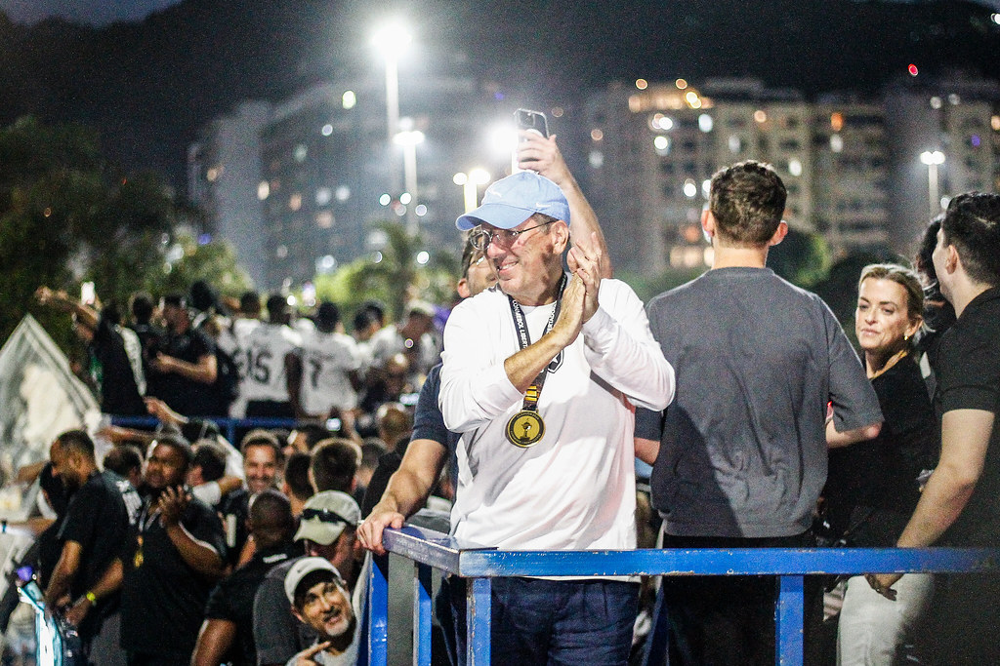
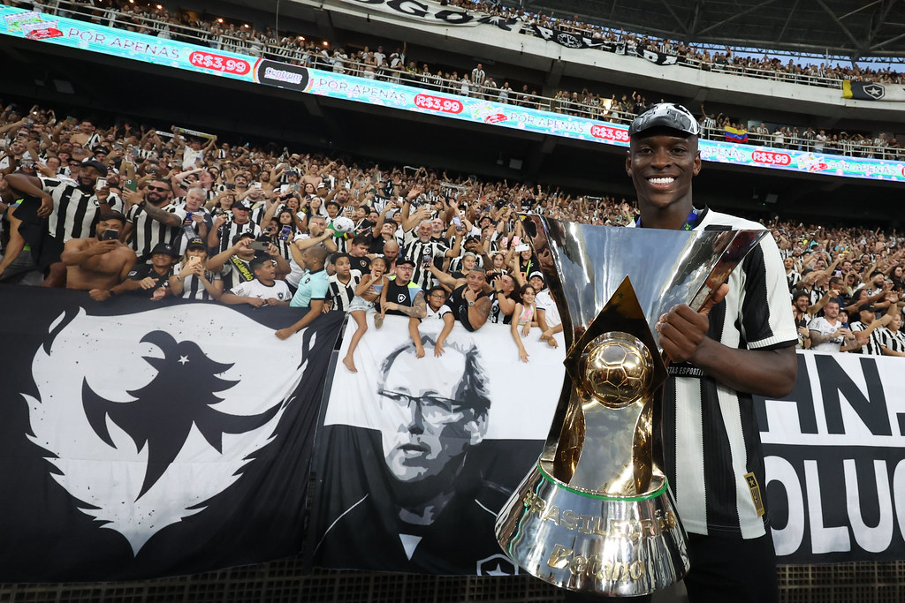

Club de Regatas Botafogo:
Em paralelo com a criação e a crescente do futebol, no ano de 1894, nascia na praia de Botafogo o Club de Regatas Botafogo, um clube de remo esporte mais popular do país na época. O nome do clube foi uma homenagem a enseada do bairro onde competiam os seus barcos. O Club de Regatas Botafogo foi o primeiro clube carioca campeão brasileiro de alguma modalidade esportiva: o remo, em campeonato realizado no Rio de Janeiro em outubro de 1902, com a vitória do atleta Antônio Mendes de Oliveira Castro, que anos mais tarde viria a se tornar presidente do clube.
Botafogo Football Club:
Uma década após a fundação do Club de Regatas Botafogo, em 1904, com a popularização do futebol no Brasil, dois estudantes do colégio Alfredo Gomes, Flávio Ramos e Emmanuel Sodré tiveram a ideia de fundar um clube de futebol.Os meninos que residiam no bairro de Botafogo, reuniram-se com outros amigos para fundar o Electro Club. O nome que só duraria 2 meses, foi o primeiro dado ao Botafogo. Em 18 de setembro, foi feita uma reunião na casa de Dona Chiquitota avó de Flávio Ramos, que não gostou do nome do clube e argumentou para trocar o nome para botafogo por ser o nome do local onde moravam, então o clube passou a se chamar Botafogo Football Club. A primeira vitória do clube viria no seu segundo jogo, em 21 de maio de 1905, sobre o Petropolitano, 1 a 0, gol de Flávio Ramos. Em 1906, o time participou do primeiro Campeonato Carioca e tornou-se o primeiro campeão da cidade.
Surge o Botafogo de Futebol e Regatas:
Em 11 de julho de 1942, durante uma partida de basquete entre Club de Regatas Botafogo e o Botafogo Football Club, Albano, jogador do Botafogo Football Club, faleceu repentinamente durante o intervalo da partida. A partida foi interrompida, e o corpo de Albano saiu da sede de General Severiano. Em homenagem ao jogador, o então presidente do Club de Regatas Botafogo, Augusto Frederico Schmidt, e o presidente do Botafogo Football Club, Eduardo Góis Trindade entraram em comum acordo para uma fusão entre os clubes. Assim, em dezembro de 1942, após 38 anos da fundação do Botafogo Football Club e 48 anos do Club de Regatas Botafogo, foi fundado oficialmente o Botafogo de Futebol e Regatas, marcando uma nova era de uma história gloriosa.

Anos seguintes:
Os anos que se seguiram foram marcados por vitórias e grandes ídolos. O time alvinegro reuniu craques como Garrincha, Nilton Santos, Didi, Quarentinha, Amarildo, Paulo Valentim, jogadores que serviram de base para a Seleção Brasileira, que conquistou as Copas do Mundo em 1958 e 1962. Em 1968 o clube alcançou seu primeiro título brasileiro. Já 1995, comandado por Túlio, Gonçalves e Donizete conquistou seu segundo título brasileiro, reforçando ainda mais sua gigantesca tradição.
Atualmente:
Em 2021 aconteceu um marco histórico para o clube. No dia 24 de dezembro, John Textor foi anunciado como o novo acionista do Botafogo, que agora seria dirigido no modelo de Sociedade Anônima de Futebol (SAF). Com a SAF um processo de reestruturação se iniciou, com o clube se tornando novamente profissional e autossustentável. O profissionalismo e a nova gestão logo trouxeram resultados. Em 2024, o botafogo viveu o maior ano de sua história, levantando a taça do campeonato brasileiro pela terceira vez na sua história e sendo campeão da Conmebol Libertadores, o maior torneio da América do Sul.
Torcida comemorando Libertadores de 2024
John Textor atual dono do Botafogo
Marlon Freitas capitão do Botafogo com taça da Libertadores
Luiz Henrique com a taça do Brasileirão de 2024
